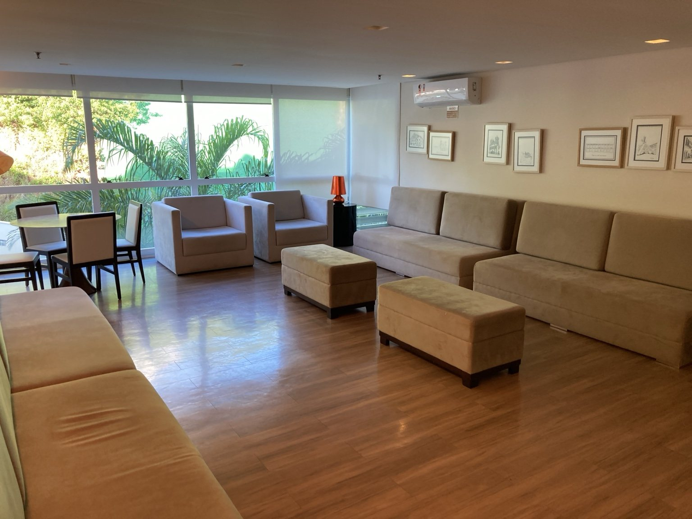

Sala de estudo e convivência
Estudo de ambiente para leitura, estudo, espera e convivência tranquila.

Situação atual / referência inicial do ambiente.
Clique aqui para ver a imagem maior

Proposta visual para sala de estudo e convivência.
Clique aqui para ver a imagem maior
Sala de estudo e convivência: um espaço com vocação natural
Entre todas as áreas comuns do Costa España, esta talvez seja uma das que possuem vocação mais natural para funcionar como sala de estudo, leitura e convivência leve. O ambiente já transmite uma atmosfera relativamente mais intimista, silenciosa e reservada, o que facilita muito sua requalificação.
A proposta não exige necessariamente uma grande reforma. Parte dos móveis existentes pode ser reaproveitada e reinterpretada dentro de uma composição mais organizada e acolhedora.
Com iluminação adequada, melhor distribuição do mobiliário, alguns pontos de apoio, plantas, quadros e uma curadoria visual mais cuidadosa, o espaço pode ganhar identidade própria sem perder simplicidade.
É importante entender que uma boa sala de convivência não precisa ser excessivamente tecnológica ou cheia de elementos. Em muitos casos, o que faz diferença é justamente a sensação de conforto visual e permanência.
Televisão, por exemplo, não precisa ser o foco principal do ambiente — e talvez nem seja necessária em alguns cenários. Mas, caso exista, o uso controlado de volume ou fones de ouvido já seria suficiente para evitar conflitos de uso, sem transformar isso em um problema central da proposta.
Outro ponto importante é que um espaço de estudo bem resolvido ajuda inclusive a organizar outros usos do condomínio. Hoje, algumas moradoras acabam utilizando a sala para fazer unha ou pequenos procedimentos de autocuidado, muito mais por falta de alternativa apropriada do que por inadequação pessoal.
Se o condomínio futuramente desenvolver a área de beauty spa próxima à academia, parte dessa demanda naturalmente migrará para um ambiente mais adequado. Isso permitirá que a sala de estudo assuma de forma mais clara sua vocação original.
O potencial aqui está justamente na delicadeza da proposta: criar um espaço agradável, elegante e funcional, onde moradores possam estudar, ler, trabalhar pontualmente ou simplesmente permanecer em silêncio, sem necessidade de grandes obras ou investimentos excessivos.